以为
cứ nghĩ; tưởng rằng
động từChạm vùng trống để lật thẻ
我以为今天会下雨。 🔊Wǒ yǐwéi jīntiān huì xiàyǔ.Tôi cứ nghĩ hôm nay sẽ mưa.
我以为你不在家。 🔊Wǒ yǐwéi nǐ bú zài jiā.Tôi cứ nghĩ bạn không có ở nhà.
Chúng tôi sẽ đón các bạn tại sân bay.

Sử dụng nhiều định ngữ để mô tả đặc điểm của người hoặc sự vật.
Nghe hiểu và giải quyết tình huống mất hành lý, hộ chiếu hoặc đồ dùng.
Biểu đạt người, sự vật hoặc địa điểm chưa xác định.
Nhìn hình và đoán từ. Nhấn vào từng hình để xem đáp án.
Ở sân bay, hộ chiếu, vé máy bay hoặc hành lý của bạn bị mất. Bạn sẽ làm gì?
Công ty cử bạn ra sân bay đón một người chưa từng gặp. Bạn sẽ làm gì?
Đủ 27 từ theo PowerPoint. Mặt sau gồm hình ảnh, hai ví dụ, pinyin và bản dịch.
cứ nghĩ; tưởng rằng
động từChạm vùng trống để lật thẻgiống; giống như
động từChạm vùng trống để lật thẻlớn lên; phát triển
động từChạm vùng trống để lật thẻ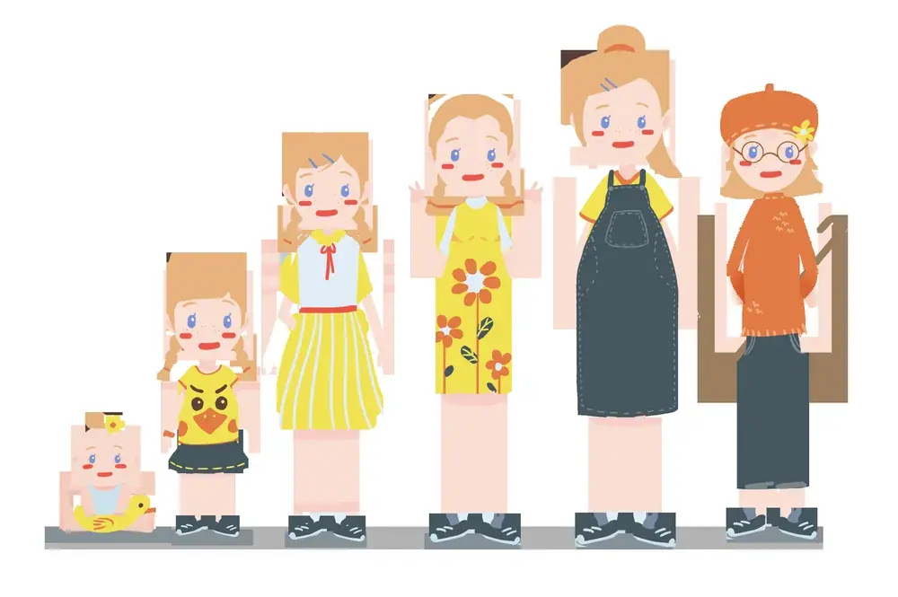
chiều cao
danh từChạm vùng trống để lật thẻ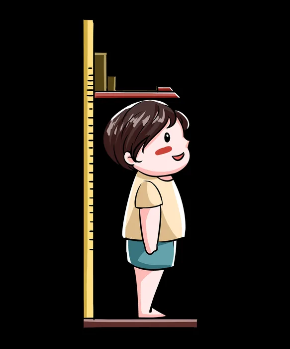
mét
lượng từChạm vùng trống để lật thẻ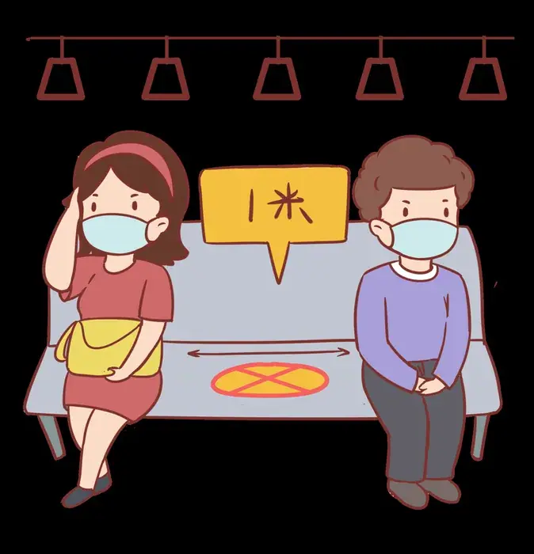
gầy; ốm
tính từChạm vùng trống để lật thẻ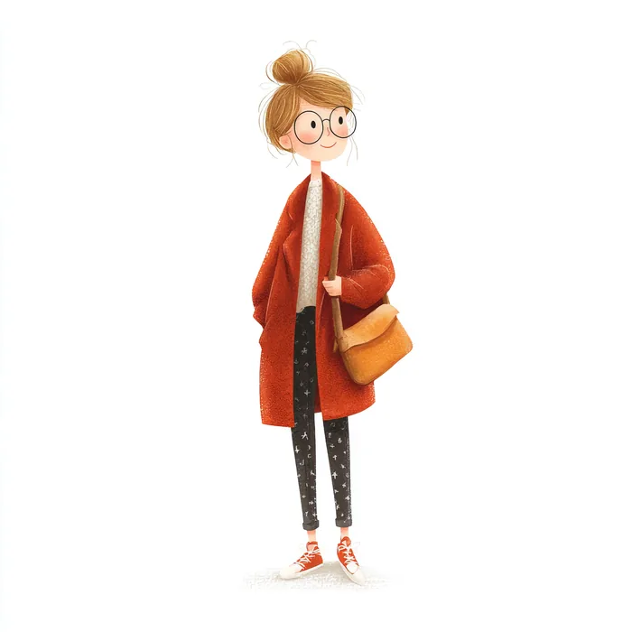
đón; gặp
động từChạm vùng trống để lật thẻ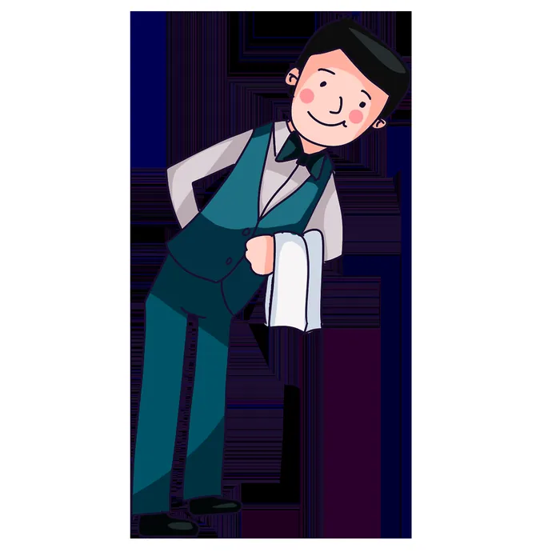
hành lý
danh từChạm vùng trống để lật thẻ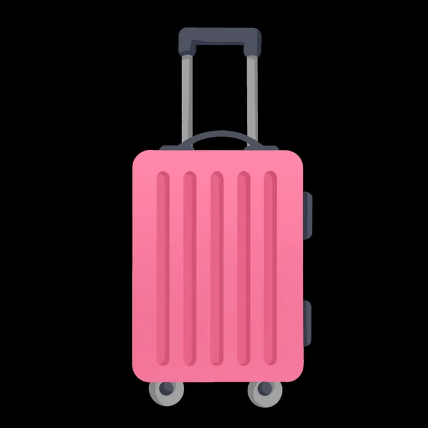
mất; thất lạc
động từChạm vùng trống để lật thẻhòm; thùng; vali
danh từChạm vùng trống để lật thẻsố; số hiệu
danh từChạm vùng trống để lật thẻ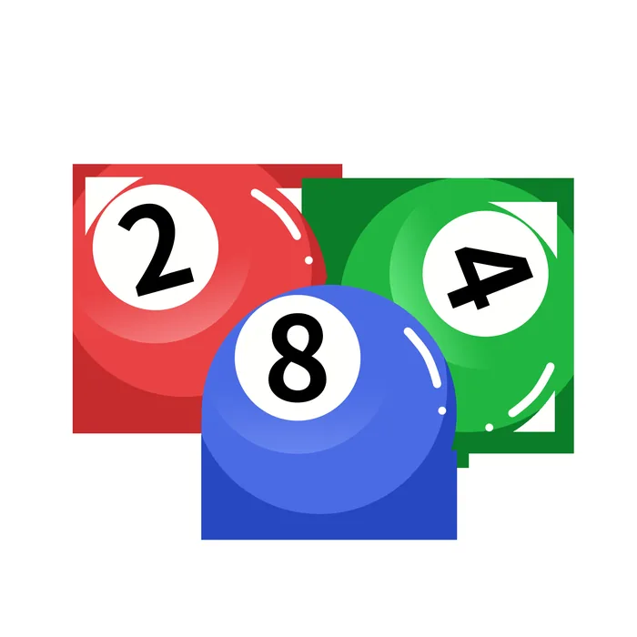
hình như; dường như
phó từChạm vùng trống để lật thẻ
quan trọng
tính từChạm vùng trống để lật thẻ
lo lắng; sốt ruột
tính từChạm vùng trống để lật thẻ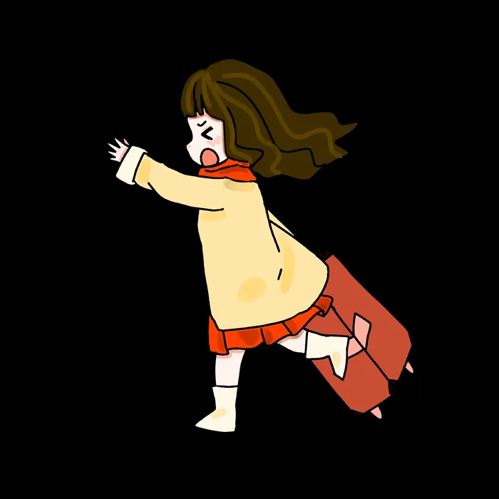
hộ chiếu
danh từChạm vùng trống để lật thẻquầy dịch vụ
danh từChạm vùng trống để lật thẻ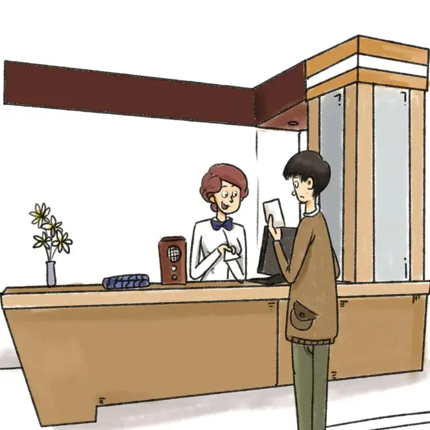
nên; cần phải
động từ năng nguyệnChạm vùng trống để lật thẻ
đứng
động từChạm vùng trống để lật thẻgiữa; ở giữa
danh từChạm vùng trống để lật thẻ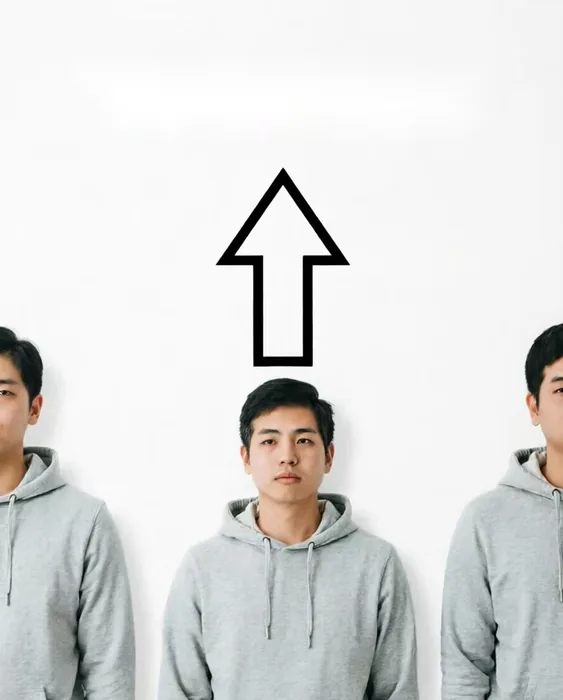
ngắn
tính từChạm vùng trống để lật thẻtóc
danh từChạm vùng trống để lật thẻ
trẻ; trẻ tuổi
tính từChạm vùng trống để lật thẻ
phát hiện; tìm ra
động từChạm vùng trống để lật thẻ
mất; không thấy nữa
động từChạm vùng trống để lật thẻ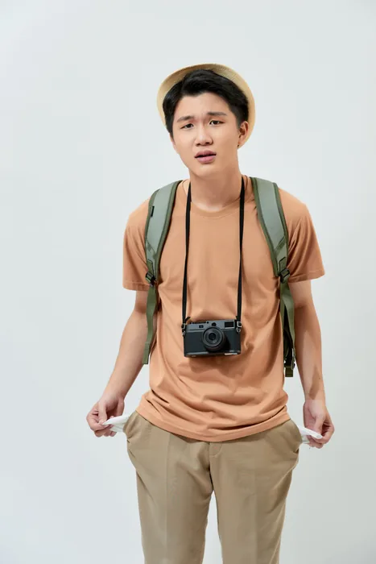
mang; dắt; đem
động từChạm vùng trống để lật thẻ
giúp đỡ
động từChạm vùng trống để lật thẻảnh; bức ảnh
danh từChạm vùng trống để lật thẻ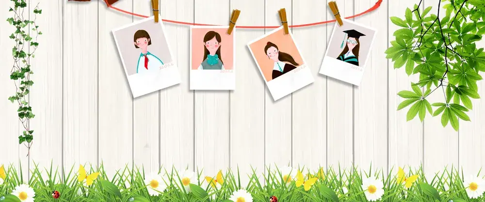
Ở nhà, Lưu Minh và Vương Nhất Tuyết trò chuyện trên ghế sofa.
刘明：这是杨同乐吗？他怎么跟白家月在一起？
王一雪：他不是杨同乐，他叫李文，是白家月的好朋友。
刘明：我还以为是同乐呢，他们看上去有点儿像。
王一雪：是长得有点儿像，但是他比同乐高，身高有一米八。
刘明：看起来也比同乐瘦一点儿。
王一雪：下个星期家月和李文要来北京，我去机场接他们。
刘明：他们哪天到北京？我跟你一起去机场接他们吧。
Tại sân bay, Lý Văn và Bạch Gia Nguyệt đang ở khu vực nhận hành lý.
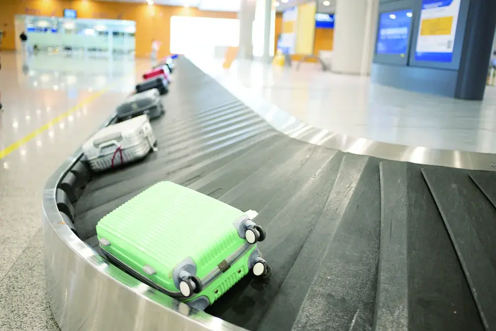
白家月：我的行李怎么还没出来？是不是丢了？
李文：你的行李箱是什么样的？
白家月：是一个黑色的箱子，上面写着我的名字和电话号码。
李文：我好像在哪儿看到过这个箱子，是不是有人拿错了？
白家月：我们快找谁问一下吧，箱子里有不少重要的东西。
李文：别着急，我们拿着护照和机票，去服务台问问吧。
Trong sảnh sân bay, Lưu Minh và Vương Nhất Tuyết đang đón bạn.
刘明：飞机早就到了，你看见白家月他们了吗？
王一雪：没有，他们应该快出来了。
刘明：我们站到中间去吧，这样他们好找一些。
王一雪：你看那个高个子的人是李文吗？
刘明：你说的是哪个？那个穿着黑衣服的短头发的年轻人？
王一雪：对，那个人就是李文！你看，家月在他后面呢。
Trong phòng khách sạn, Lý Văn đang viết nhật ký.
旁白：昨天我到北京了。虽然路上花了十几个小时，但是跟家月坐在一起，我觉得时间过得很快。到机场的时候，家月发现行李箱不见了，我带她去服务台，帮助她找到了行李箱。走出机场的时候，已经八点多了，我们一出来就看见了王老师的姐姐，她看起来比照片上年轻。晚上，一雪姐带我们去吃了一家很好吃的中国菜。
Dùng để miêu tả ngoại hình hoặc trạng thái của người, sự vật.
你 ______ 长得更像你妈妈。
你 ______，好好休息一下吧。
哪儿、什么、谁、哪 có thể chỉ địa điểm, sự vật hoặc người chưa xác định.
我去问问谁。
我做点儿什么给你吃。
Thứ tự thường dùng: thời gian/địa điểm, hành động/trạng thái, đặc điểm, rồi danh từ trung tâm.
Thời gian/địa điểm + hành động + đặc điểm + 的 + danh từ